GC8M8NT Resolution
- Listing geocaching - Steganographie 🔗
- Etape 1 - Ad vitam eternam, ad vitam Ulam 🔗
- Etape 2 - LaSuiteQRGB 🔗
- Etape 3 - FortKnox 🔗
- Etape 4 - QR en Folie Qui Volent 🔗
- Etape 5 - QR et Fin 🔗
0 - Listing geocaching
On y trouve un QR code:Le scan du QR code donne :
GEO:35.25265000,-80.79768333 ce qui donne dans
googleClin d'oeil amusant ;)
Passons ensuite le QR code sur ce site (il permet d'extraire des données cachées avec un méthode stéganographique): https://georgeom.net/StegOnline/extract
- Uploader le fichier
- Cliquer ensuite sur le bouton "Extract Files/Data"
- Parametrer comme ci dessous, puis cliquer sur GO
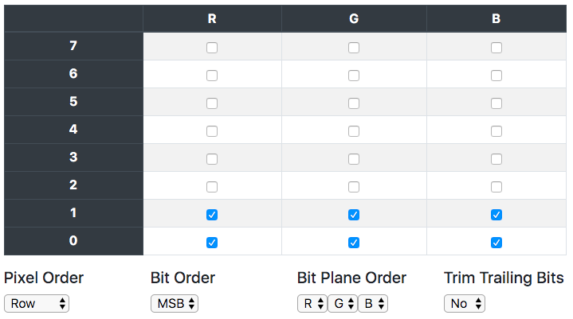
Le résulat obtenu est le suivant :
http://v eroguigu i83.free .fr/Geoc aching/G C8M8NT/0 d85bdc6- 9e3c-44d a-98f6-0 9b6/etap e1.html
Supprimons les espaces, on obtient une URL
http://veroguigui83.free.fr/Geocaching/GC8M8NT/0d85bdc6-9e3c-44da-98f6-09b6/etape1.html
Etape 1 - Ad vitam eternam, ad vitam Ulam
On arrive sur un page qui contient cette image: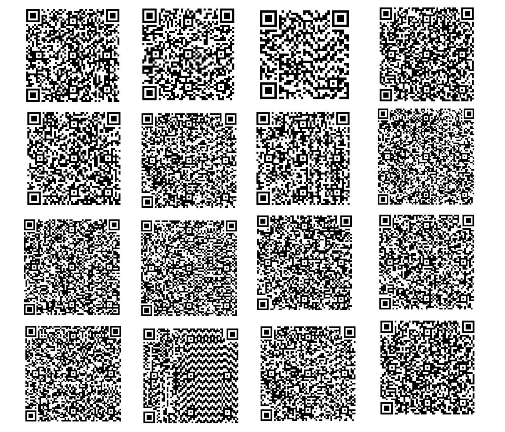
Apres scan de tous les QR code, un contient une information intéréssante:
http://veroguigui83.free.fr/Geocaching/GC8M8NT/0d85bdc6-9e3c-44da-98f6-09b6/etape1.php Et oui c'était ce QR code hahahahahahahahahahahahahahahaha !!! Vous avez trouvé rapidement ?
Allons donc voir ce qui se passe par la:
http://veroguigui83.free.fr/Geocaching/GC8M8NT/0d85bdc6-9e3c-44da-98f6-09b6/etape1.php
On arrive sur une page avec une image et un texte qui contient des mots clés intéréssants:
- ULAM
- du fini vers l'infini (Du centre vers l'extérieur)
- le carré chromatique (carré degradé de couleur)
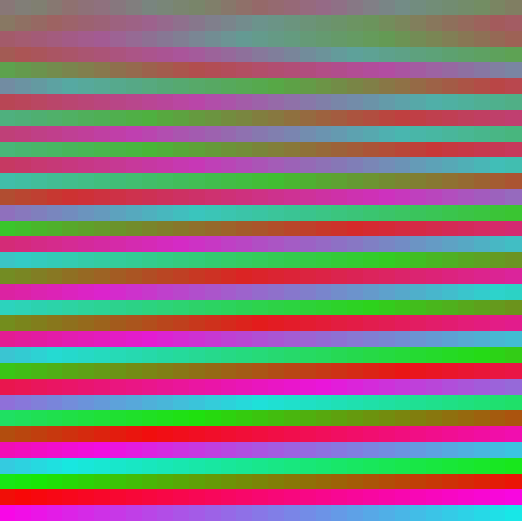
Un petit programme plus tard, voila le resultat.
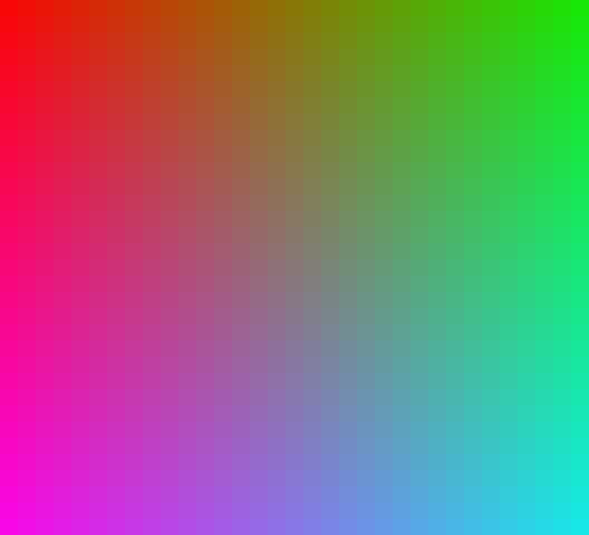
Nous avons donc maintenant un carré chromatique, duquel nous allons chercher à extraire des QR codes.
- Du rouge au vert, du vert au bleu, du bleu au magenta, du magenta au rouge, vous en aurez fait le tour. Des primaires vous aurez la synthèse.
On concatène tout ca, on obtient une URL
http://veroguigui83.free.fr/Geocaching/56902d8f-8520-4fde-a58f-d884/LaSuiteQRGB.png
Etape 2 - LaSuiteQRGB
On arrive sur un page qui contient cette image: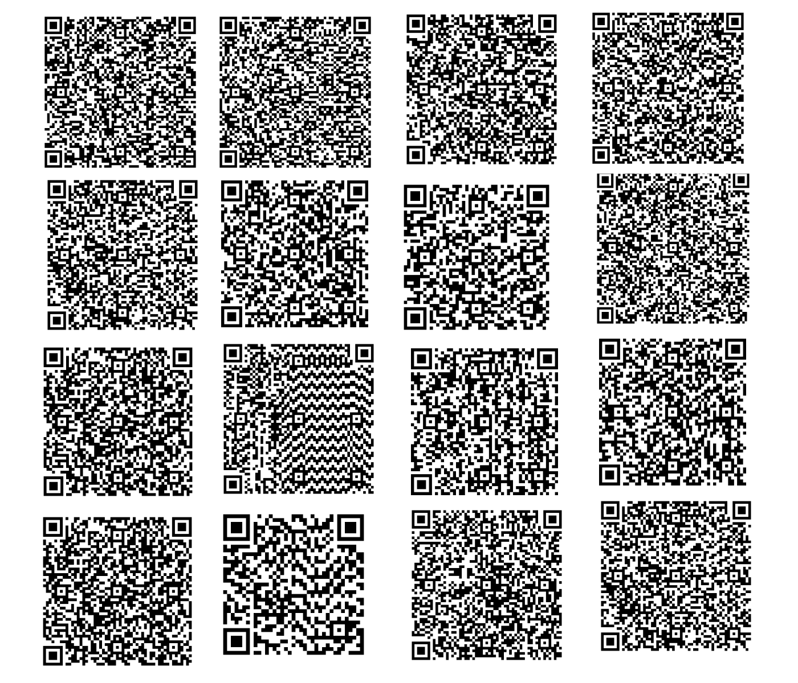
Apres scan de tous les QR code, un contient une information intéréssante:
http://veroguigui83.free.fr/Geocaching/GC8M8NT/56902d8f-8520-4fde-a58f-d884/etape2.php
Vous avez trouvé la bonne URL bravo !!!!!
C'était facile non ? La suite le sera peut être moins
Allons donc voir ce qui se passe par la:
http://veroguigui83.free.fr/Geocaching/GC8M8NT/56902d8f-8520-4fde-a58f-d884/etape2.php
La page contient un QR code :
En regardant de plus pret les marqueurs du qr code on voit qu'ils contiennent chacun un petit Qr code à l'intérieur :
flashé donne:
veroguigui83.flashé donne:
solidmenger.18flashé donne:
000@outlook.frIl s'agit d'un email:
veroguigui83.solidmenger.18000@outlook.frJ'envoi donc un email à cette adresse, et en réponse je reçois:
Félicitations jeune geocacheur d'être arrivé jusque ici. Bien
évidement cette magnifique énigme à base de QR code n'est pas fini
!!!! Mouhahahaha.
Avant d'aller à l'étape 3 (lien ci-dessous), assurez vous d'avoir bien
tout les éléments de l'étape 2...
"http://veroguigui83.free.fr/Geocaching/GC8M8NT/b02ff454-47da-446a-a857-4e3b/etape3.html"
Congratulations young geocacher for arriving here. Obviously this
magnificent enigma based on QR code is not finished !!!! Mouhahahaha.
Before going to step 3 (link below), make sure you have all the
elements of step 2... "http://veroguigui83.free.fr/Geocaching/GC8M8NT/b02ff454-47da-446a-a857-4e3b/etape3.html"
Ensuite en analysant les couleurs utilisées dans le Qr code, on remarque que certains pixels sont différents des autres.
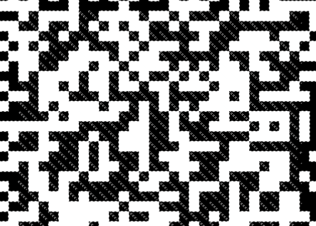
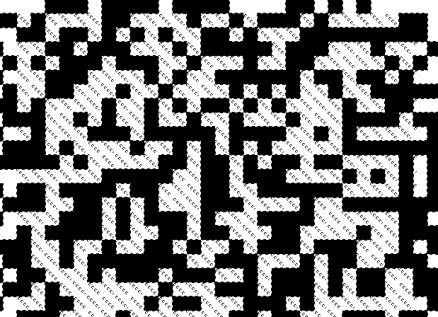
J'extrais donc ces pixels, puis les mets sur un fond rouge pour bien les voir.
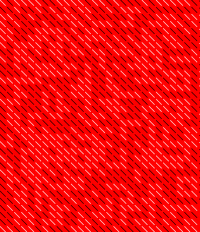
En regardant encore de plus pres les couleurs, je me rends compte qu'il y a deux noirs et deux blancs différents. Je les extrait, puis joue avec en inversant les blancs et les noirs jusqu'a voir apparaitre ceci.
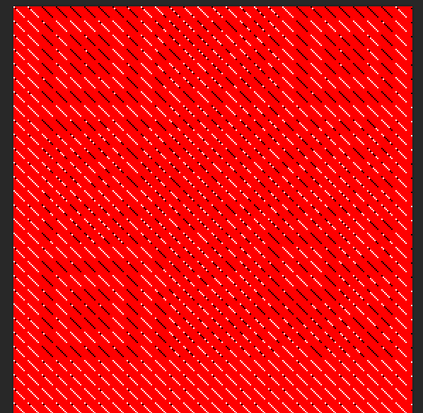
Je remarque également que chaque "unité" de pixels est composée de 8 pixels. Cherchons donc 8 QRs.
Ce programme permet d'extraire chacun des QR codes.
Flashé donne
d'un périmètre à l'autre
Flashé donne
à hue et à dia, autant qu'il est indiqué
Flashé donne
tu devras le faire, afin
Flashé donne
que, dans l'étape suivante
Flashé donne
la clé du coffre tu auras
Flashé donne
ddd ggg gg d ddd g dd

Flashé donne
ddd ggg gg d ddd g dd
Flashé donne
ddd gg d g dd ....
On obtient donc le mssage suivant qui va servir à l'étape suivante, dont nous avons obtenu l'url plus haut par email.
d'un périmètre à l'autre à hue et à dia, autant qu'il est indiqué tu devras le faire, afin
que, dans l'étape suivante la clé du coffre tu auras ddd ggg gg d ddd g dd ddd ggg gg d ddd g
dd ddd gg d g dd ....
http://veroguigui83.free.fr/Geocaching/GC8M8NT/b02ff454-47da-446a-a857-4e3b/etape3.html
Etape 3 - FortKnox
On arrive sur un page qui contient cette image: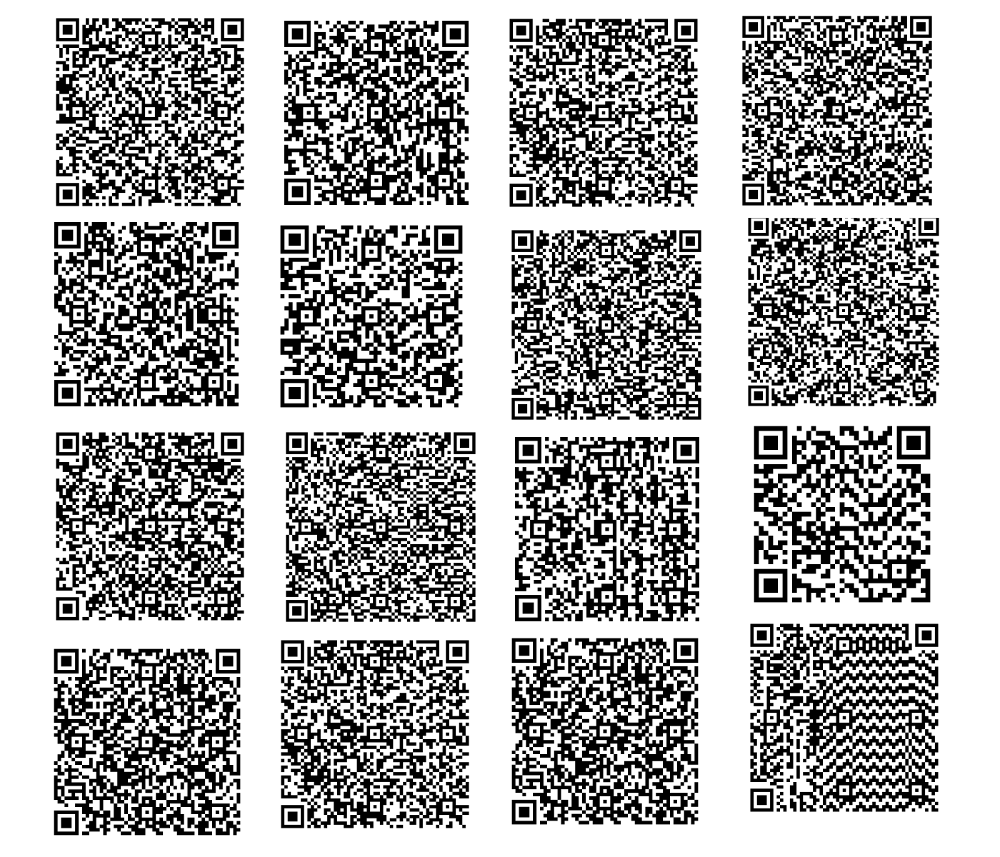
Apres scan de tous les QR code, un contient une information intéréssante:
http://veroguigui83.free.fr/Geocaching/GC8M8NT/b02ff454-47da-446a-a857-4e3b/etape3.php
Et oui c'était ce QR code hahahahahahahahahahahahahahahaha !!! Vous avez trouvé rapidement ?
Allons donc voir ce qui se passe par la:
http://veroguigui83.free.fr/Geocaching/GC8M8NT/b02ff454-47da-446a-a857-4e3b/etape3.php
Il y a un Qr code au milieu de la page, et ce Qr code est plutot bizarre.
Mais si on se réfère à l'indice trouvé précedemment, on peut comprendre qu'il faut tourner chaque couronne de pixels (en partant de l'extérieur) à gauche ou à droite en suivant les combinaisons fournies.
- Couronne 1: DROITE DROITE DROITE
- Couronne 2: GAUCHE GAUCHE GAUCHE
- Couronne 3: GAUCHE GAUCHE
- Couronne 4: DROITE
- Couronne 5: DROITE DROITE DROITE
- Couronne 6: GAUCHE
- Couronne 7: DROITE DROITE
- Couronne 8: DROITE DROITE DROITE
- Couronne 9: GAUCHE GAUCHE GAUCHE
- Couronne 10: GAUCHE GAUCHE
- Couronne 11: DROITE
- Couronne 12: DROITE DROITE DROITE
- Couronne 13: GAUCHE
- Couronne 14: DROITE DROITE
- Couronne 15: DROITE DROITE DROITE
- Couronne 16: GAUCHE GAUCHE
- Couronne 17: DROITE
Couronne 18: GAUCHE
Couronne 19: DROITE DROITE
En suivant le principe suivant :
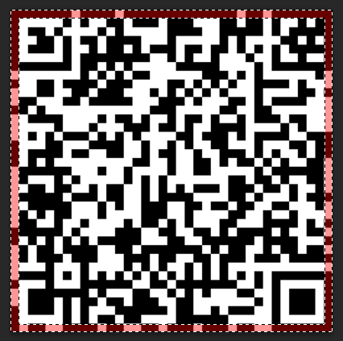
On tourne donc la couronne 1 trois fois vers la droite.
Et ainsi de suite...
Pour obtenir ce QR :
Qui une fois scanné donne :
http://veroguigui83.free.fr/Geocaching/GC8M8NT/b02ff454-47da-446a-a857-4e3b/QRenFolie.png
Passons donc à l'étape suivante : http://veroguigui83.free.fr/Geocaching/GC8M8NT/b02ff454-47da-446a-a857-4e3b/QRenFolie.png
Etape 4 - QR en Folie Qui Volent
On arrive sur un page qui contient cette image: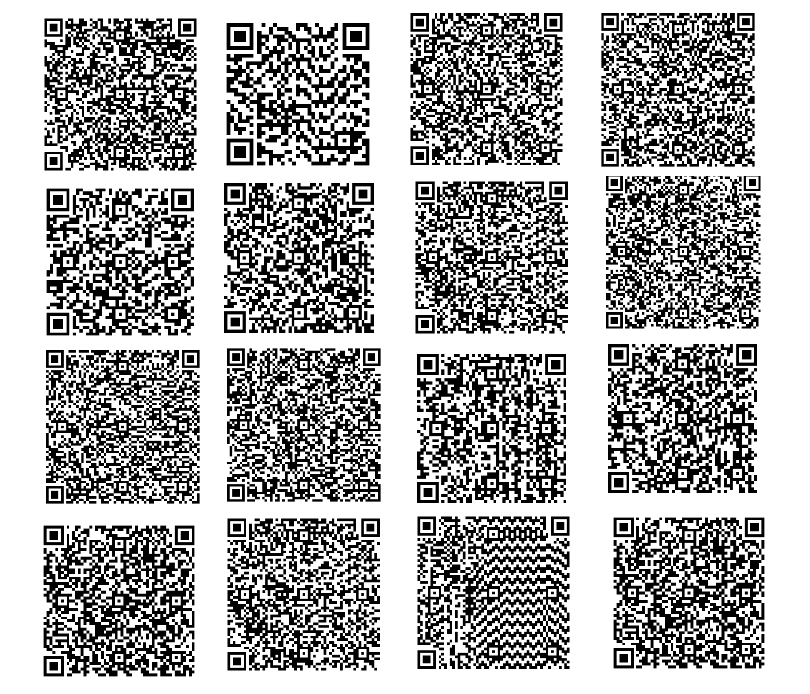
Apres scan de tous les QR code, un contient une information intéréssante:
http://veroguigui83.free.fr/Geocaching/GC8M8NT/f8eb05b3-4a93-4cc0-85b9-789d/etape4.php
Et oui c'était ce QR code hahahahahahahahahahahahahahahaha !!! Vous avez trouvé rapidement ?
Allons donc voir ce qui se passe par la:
http://veroguigui83.free.fr/Geocaching/GC8M8NT/f8eb05b3-4a93-4cc0-85b9-789d/etape4.php
Un GIF animé d'un QR Code vole :), recupérons le.
Scannons tous les QR codes et voyons ce que ca donne:
The
coo
rdi
natesare:noI'mkiddinglol.Doyouwantthem?Sook!Takethelink:http://veroguigui83.free.fr/Geocaching/GC8M8NT/b02ff454-47da-446a-a857-4e3b/QRenFolie.pngandchangetheendby:finalcoordinates18390.htmlCongratulationsonyourhighqualityworkEt en plus lisible :
The coordinates are: No I'm kidding lol. Do you want them So ok! Take the link:
http://veroguigui83.free.fr/Geocaching/GC8M8NT/b02ff454-47da-446a-a857-4e3b/QRenFolie.png
and change the end by: finalcoordinates18390.html Congratulations on your high quality work
{kind=link}
Ce qui fournit l'url de l'étape suivante :
http://veroguigui83.free.fr/Geocaching/GC8M8NT/b02ff454-47da-446a-a857-4e3b/finalcoordinates18390.html
Mais !!!!! Ce n'est pas fini avec cette étape...
L'analyse de la durée de chaque frame du GIF montre qu'il existe deux durées possibles
100 ms.
et 110 ms.. Comme souvent quand on se retrouve avec deux valeurs, on essaye de convertir en binaire.
Attribuons le 1 pour les frames de 100ms. et le 0 pour les frames de 100ms.
- Frame 0 Durée:
100 ms.=>0 - Frame 1 Durée:
110 ms.=>1 - Frame 2 Durée:
100 ms.=>0 - Frame 3 Durée:
100 ms.=>0 - Frame 4 Durée:
100 ms.=>0 - Frame 5 Durée:
110 ms.=>1 - Frame 6 Durée:
100 ms.=>0 - Frame 7 Durée:
110 ms.=>1 - Frame 8 Durée:
100 ms.=>0 - Frame 9 Durée:
100 ms.=>0 - Frame 10 Durée:
110 ms.=>1 - Frame 11 Durée:
110 ms.=>1 - Frame 12 Durée:
100 ms.=>0 - Frame 13 Durée:
100 ms.=>0 - Frame 14 Durée:
110 ms.=>1 - Frame 15 Durée:
100 ms.=>0 - Frame 16 Durée:
100 ms.=>0 - Frame 17 Durée:
100 ms.=>0 - Frame 18 Durée:
110 ms.=>1 - Frame 19 Durée:
100 ms.=>0 - Frame 20 Durée:
100 ms.=>0 - Frame 21 Durée:
100 ms.=>0 - Frame 22 Durée:
100 ms.=>0 - Frame 23 Durée:
100 ms.=>0 - Frame 24 Durée:
100 ms.=>0 - Frame 25 Durée:
100 ms.=>0 - Frame 26 Durée:
110 ms.=>1 - Frame 27 Durée:
110 ms.=>1 - Frame 28 Durée:
100 ms.=>0 - Frame 29 Durée:
100 ms.=>0 - Frame 30 Durée:
110 ms.=>1 - Frame 31 Durée:
100 ms.=>0 - Frame 32 Durée:
100 ms.=>0 - Frame 33 Durée:
100 ms.=>0 - Frame 34 Durée:
110 ms.=>1 - Frame 35 Durée:
110 ms.=>1 - Frame 36 Durée:
110 ms.=>1 - Frame 37 Durée:
100 ms.=>0 - Frame 38 Durée:
100 ms.=>0 - Frame 39 Durée:
100 ms.=>0 - Frame 40 Durée:
100 ms.=>0 - Frame 41 Durée:
100 ms.=>0 - Frame 42 Durée:
110 ms.=>1 - Frame 43 Durée:
100 ms.=>0 - Frame 44 Durée:
110 ms.=>1 - Frame 45 Durée:
110 ms.=>1 - Frame 46 Durée:
110 ms.=>1 - Frame 47 Durée:
100 ms.=>0 - Frame 48 Durée:
100 ms.=>0 - Frame 49 Durée:
100 ms.=>0 - Frame 50 Durée:
110 ms.=>1 - Frame 51 Durée:
110 ms.=>1 - Frame 52 Durée:
110 ms.=>1 - Frame 53 Durée:
100 ms.=>0 - Frame 54 Durée:
100 ms.=>0 - Frame 55 Durée:
110 ms.=>1 - Frame 56 Durée:
100 ms.=>0 - Frame 57 Durée:
100 ms.=>0 - Frame 58 Durée:
110 ms.=>1 - Frame 59 Durée:
110 ms.=>1 - Frame 60 Durée:
100 ms.=>0 - Frame 61 Durée:
100 ms.=>0 - Frame 62 Durée:
100 ms.=>0 - Frame 63 Durée:
110 ms.=>1 - Frame 64 Durée:
100 ms.=>0 - Frame 65 Durée:
100 ms.=>0 - Frame 66 Durée:
110 ms.=>1 - Frame 67 Durée:
110 ms.=>1 - Frame 68 Durée:
100 ms.=>0 - Frame 69 Durée:
110 ms.=>1 - Frame 70 Durée:
100 ms.=>0 - Frame 71 Durée:
110 ms.=>1 - Frame 72 Durée:
100 ms.=>0 - Frame 73 Durée:
100 ms.=>0 - Frame 74 Durée:
100 ms.=>0 - Frame 75 Durée:
100 ms.=>0 - Frame 76 Durée:
100 ms.=>0 - Frame 77 Durée:
100 ms.=>0 - Frame 78 Durée:
100 ms.=>0
Ce qui donne le binaire suivant :
0100010100110010001000000011001000111000001011100011100100110001001101010000000
Et en texte:
E2 28.915
Voila les coordonnées EST !!!
Etape 5 - QR en Folie Qui Volent
On arrive sur un page qui contient cette image: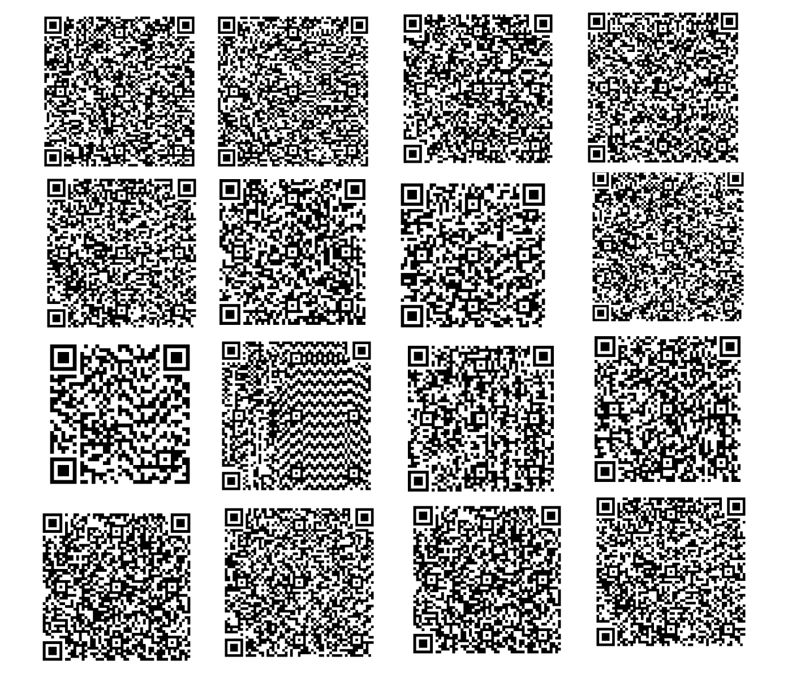
Apres scan de tous les QR code, un contient une information intéréssante:
http://veroguigui83.free.fr/Geocaching/GC8M8NT/433dabff-d746-4c96-960c-0e92/etape5.php
Et oui c'était ce QR code hahahahahahahahahahahahahahahaha !!! Vous avez trouvé rapidement ?
Allons donc voir ce qui se passe par la:
http://veroguigui83.free.fr/Geocaching/GC8M8NT/433dabff-d746-4c96-960c-0e92/etape5.php
Récupérons le QR code qui se ballade sur la page
L'analayse EXIF de l'image montre qu'il contient des données supplémentaires à la fin.
Warning : [minor] Trailer data after PNG IEND chunk
Ouvrons donc le fichier dans un éditeur HEXA. Sachant qu'un fichier PNG finit par
44AE4260 82,
voyons ce qu'on peut trouver après... On trouve un Ficher RAR, mais aussi un autre fichier PNG.
Commencons par ouvrir le fichier RAR.
Il contient un fichier texte nommé
here.txt. Son contenu est le suivant:
68 111 32 121 111 117 32 116 104 105 110 107 32 116 104 101 32 99 111 111 114 100 105 110 97 116 101 115 32 97 114 101 32 104 101 114 101 63 32 78 79
Il s'agit d'ASCII, décodons le:
Do you think the coordinates are here? NO
La bonne blague: Fausse piste.
Passons donc à l'analyse du PNG extrait
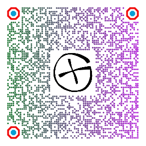
Une fois scanné, cela donne :
You found the right place !!! bravo !!! This mystery wasn't simple so bravo for succeeding...well if you've already found the "east" coordinates.
Here are the north coordinates: N47° 05.507
Nous venons de trouver les coordonnées NORD !
Les coordonnées finales sont donc :
N47° 05.507 E 002° 28.915
Mais ou est le checker ? Sur la page de la 5eme etape on voit bien l'image d'un checker, mais aucun lien, pour tester. Analysons donc la requete de cette image (De plus le sous titre nous laisse supposer qu'il faut trouver le checker...)
Lancons une commande CURL:
curl -I http://wawawoom.fr/geocaching/GC8M8NT/checker.php?getURL=true
Réponse du serveur
HTTP/1.1 200 OK
Date: Sat, 04 Apr 2020 22:07:03 GMT
Content-Type: image/jpeg
Server: Apache
X-Powered-By: PHP/5.6
Checker: http://geocheck.org/geo_inputchkcoord.php?gid=63851372697e913-49f8-4716-956b-8133de59b4cd
Pragma: no-cache
Cache-Control: no-store, no-cache, must-revalidate, post-check=0, pre-check=0
Set-Cookie: SERVERID100401=1520158|XokFC|XokFC; path=/
X-IPLB-Instance: 28304
On voit qu'un header supplémentaire a été ajouté : http://geocheck.org/geo_inputchkcoord.php?gid=63851372697e913-49f8-4716-956b-8133de59b4cd
Pour la MOM, il y a des informations importantes dans le checker :
Bravo vous êtes vraiment l'ami des QR Code !!!!!!
Un parking est disponible à côté de la boite.
Soyez discret il y a souvent du passage !!!!
Congratulations, you are really a friend of the QR Code !!!!
Parking is available around the box.
Be discreet, there are often a lot of people !!!!!
ATTENTION******WARNING
MASTER OF MYSTERY BOURGES
| Pour le checker de la MoM, veuillez enlever 4.204 pour le Nord et ajouter 1.008 pour l'Est |
To check the MoM, please remove 4.204 for the North and add 1.008 for the East |